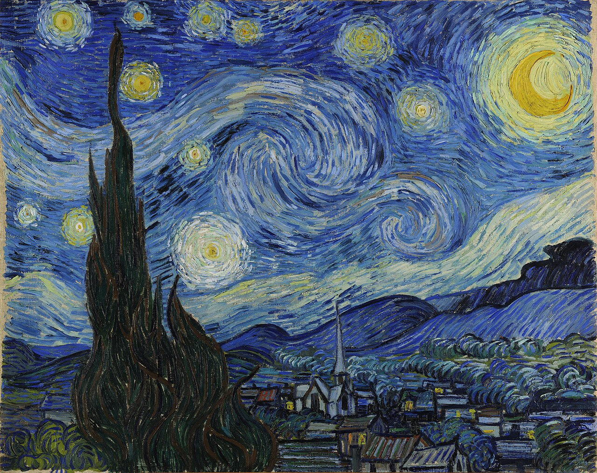

Çalış
Konu 13’tesin
Bugünün dersi
Post-Empresyonizm
6 sanatçı · Konu 11–13
Sıradaki özellik: Renk gölgeden çok duyguyu taşır. 3 eserde göreceksin.
6 tekrar · 5 pekiştirme · 3 yeni
Çalışma masan
Önce keşfet. Sonra kendini dene.
Dersler
4 açık · her döneme bir eserden başla
- Post-Empresyonizm 6 sanatçı · 3 adım Bugün
- Empresyonizm 8 sanatçı · 3 adım Bitti
- Gerçekçilik 5 sanatçı · 3 adım Bitti
- Romantizm 7 sanatçı · 3 adım Sırada
-
Sembolizm Konu 14’te açılır
6 ders daha, konular işlendikçe açılacak.
Başka turlar
Farklı sorularla yeniden bak
Hatalarım
Son turlarda takıldığın sanatçılar
4
Önümüzdeki 14 gün
Bugün 14 · yarın 6 · 52 sanatçı